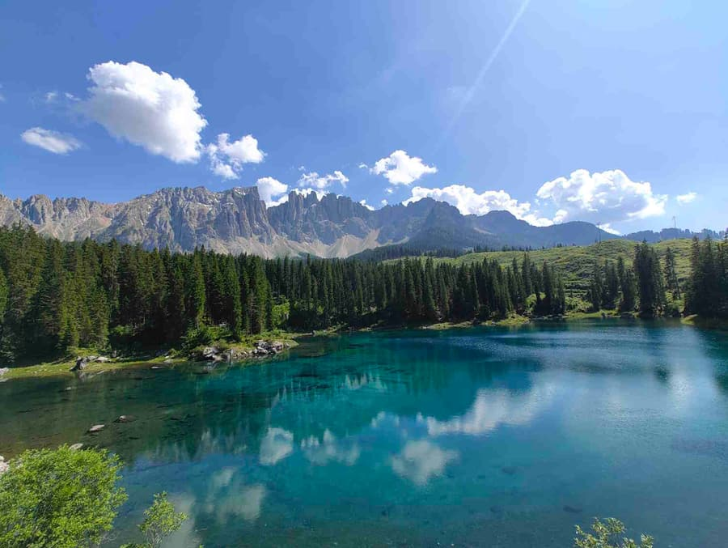

Her er INSA sin ferieplan for 2025-2026: Ferieplan 2025-2026 (PDF)
1.-3. klasse slutter ofte andre uke i juni, mens 4. klasse slutter i slutten av mai for å starte internship. 4. klasse får også ferie til slutten av september (for å fullføre internship).